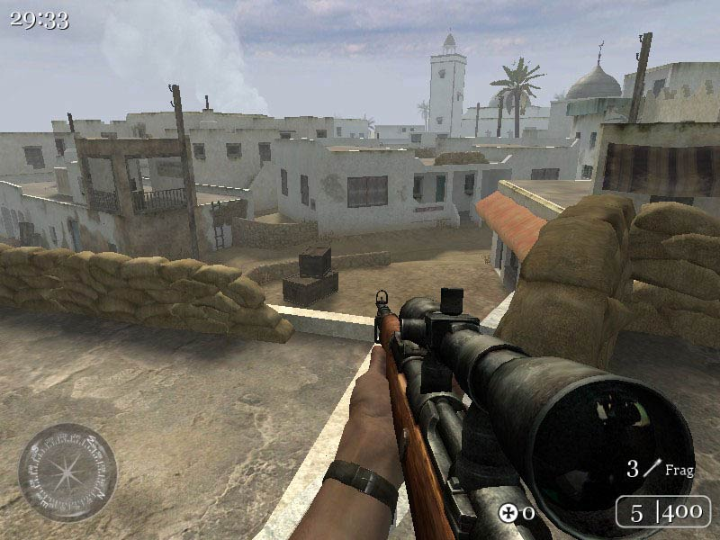
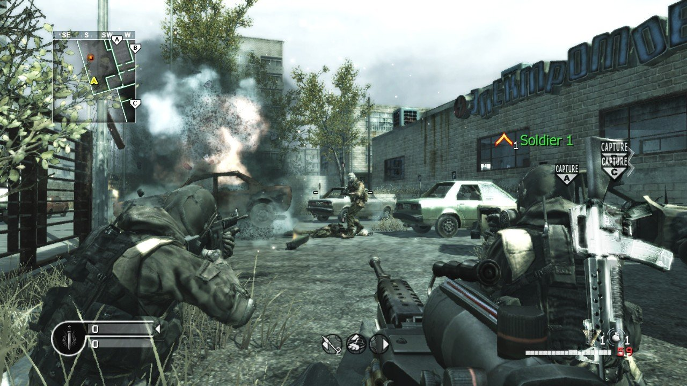
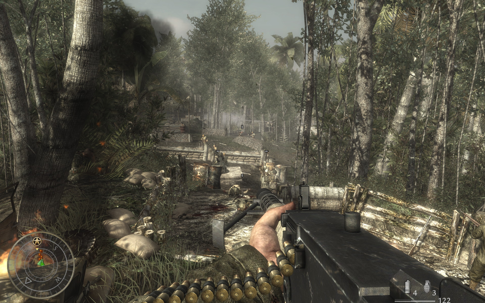
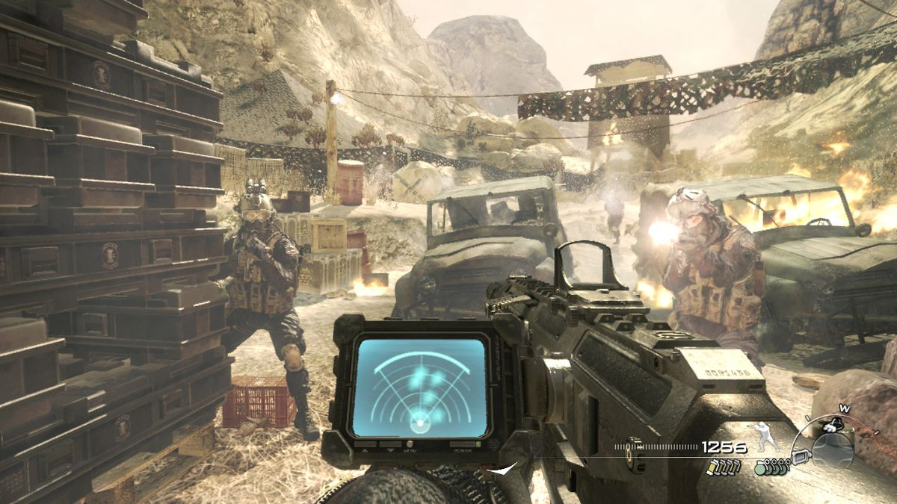
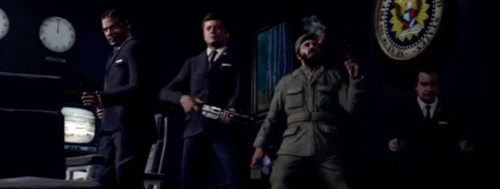

Call Of Duty: Series Review
Like it or not, Call of Duty is arguably the biggest game series in the gaming industry today, and despite the plea of many gamers, it is not going to stop any time soon. The Call of Duty license is practically a money-printing machine and this series has garnered plenty of cash, love and hatred. Some say COD games are a great time, others say they are trash. Some say whatever helps bring money to the gaming industry is good for all us gamers, and others say that COD is destroying the gaming industry. With Call of Duty: Ghosts releasing this fall, the 10th game of the main series, I think it is important to go back and look at the previous nine games and give a quick one-paragraph review for all of these games. Again, these are all my personal opinions.
Call of Duty (2003):

The first of the series, COD was a fresh new approach to the series of World War 2 games that were flooding the market, lead by Medal of Honor. Call of Duty came in and gave us three great campaigns letting us play as an American, British and Russian soldier respectively. The atmosphere was awesome, the multiplayer was fun and the single player was challenging. Overall, a great start to the series. Score: 8/10
Call of Duty 2 (2005):

A launch title for the Xbox 360, COD 2 displayed impressive visuals at the time and just all around a great time. From the single player campaign to the eight player multiplayer, it was one of the first games many of us got to play online with the new Xbox 360. A great game to launch the new consoles, was critically acclaimed by critics and gamers alike, another solid title. Score: 8/10
Call of Duty 3 (2006):

This was when the World War 2 era games were running tired. A few gameplay gimmicks were included into the game but didn’t offer much to the game. They were pretty much just tacked on. The multiplayer wasn’t nearly as satisfying when compared to other games released at the time, and the series looked like it was running out of steam. A pretty lackluster title for the series. Score: 5/10
Call of Duty 4: Modern Warfare (2007):

Hands down, the best COD in existence, this was a fantastic game and if anyone says this game wasn’t enjoyable and the multiplayer wasn’t fun, they are lying. One of the best online experiences anybody could hope for, everyone who owned an Xbox 360 or PS3 owned COD 4 and spent hours upon hours ranking up and having fun with their friends in the various game modes which have become staples of online gaming. The campaign was interesting and intense, and multiplayer was phenomenal, one of the greatest online experiences I personally ever had, COD 4 is the best of the series and in my mind is one of the top 5 best games of this console generation. Score: 9.5/10
Call of Duty: World at War (2008):

Back to WW2, this was a game I did not care for. Hackers were abound, the time period was done to death, the weapons weren’t that fun to use (many just flat-out sucked), and many of the perks and equipment (particularly the bouncing Bettys and tanks) were overpowered. The best addition this game gave us was Nazi zombies, which was basically just a gimmick at first but caught on like wildfire. The game was much more violent and gritty than the other games, but the gameplay was as weak as COD 3. Score: 5/10
Call of Duty: Modern Warfare 2 (2009):

Another fun title, controversy surrounded the highly touted “No Russian” mission which added to the immersion of the story. I personally loved MWF 2 and I had many fond memories of me and my friends playing it online. Not as good as COD 4, but still a great time when it came out, and well worth the money. Score: 8/10
Call of Duty: Black Ops (2010):

Some people’s favorite COD of the series, I hated this game. The lone positive was the zombie game mode with JFK, Castro, Nakamura and Nixon. The rest of the game was horrific in my mind. Score: 4/10
Call of Duty: Modern Warfare 3 (2011):

Nothing new. Pretty much take MWF 2 and take out all of the fun. This brought nothing exciting or new to the series and this is just not a good game by any stretch of the imagination. While Black Ops was a terrible game, at least it had the zombie game mode, this didn’t have it. This in my mind is the worst of the entire series because in my mind it seems as if they just copied Modern Warfare 2, changed the boxart, took away the great maps, added in a few overpowered killstreaks, and boxed it up and shipped it out for a quick pay-day. Not cool guys. Score: 3/10
Call of Duty: Black Ops II (2012):

Better than MWF 3 and BO, but not as good as MWF 2 or COD 4. All the same problems still persisted. Could be fun for short stretches of time, but quickly become home of what is the worst community in gaming. The COD community makes every game much worse. The single player was uninteresting and predictable, the multiplayer was fun but exploitable and overpowered weapons, chokepoints and the terrible community made this game unenjoyable for longer than a week or two. Score: 5/10
Series average thus far: 6.1/10
COD is a series that started off strong but grew lazy as far as quality is concerned. The last three installments have been a joke, but why would the developers change what they do? They will always make millions upon millions of dollars by releasing these games that are obviously lacking in quality. In the end, it’s all about making as much money as you can, while you can. Activision and Infinity Ward live by this philosophy and until the gamers stop buying these games, the quality will never improve. There is always hope for tomorrow with the new installment of Call of Duty: Ghosts, but optimisim isn't very high after several weak press conferences that were shredded apart by critics and viewers alike. Only time will tell if we can go back to the good days of Call of Duty's origins.